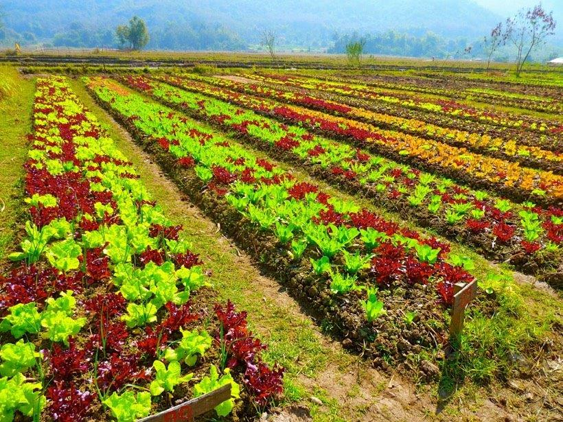
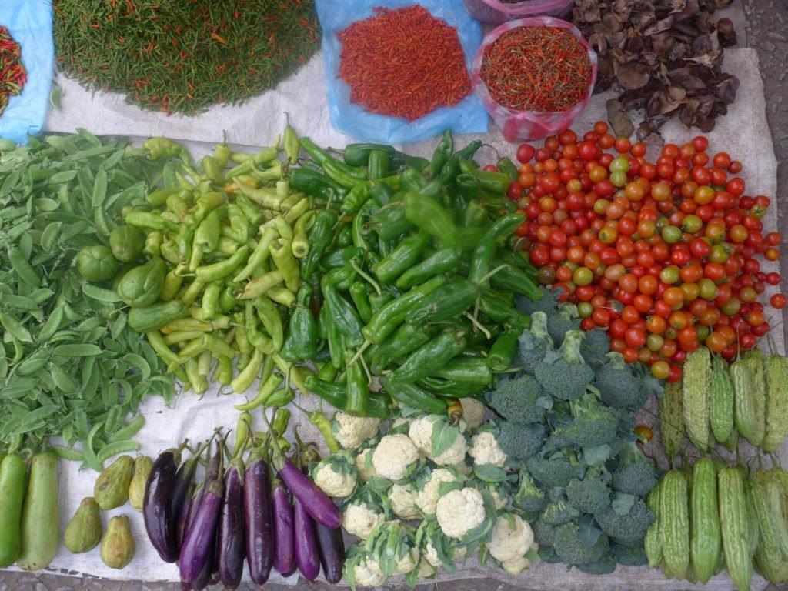
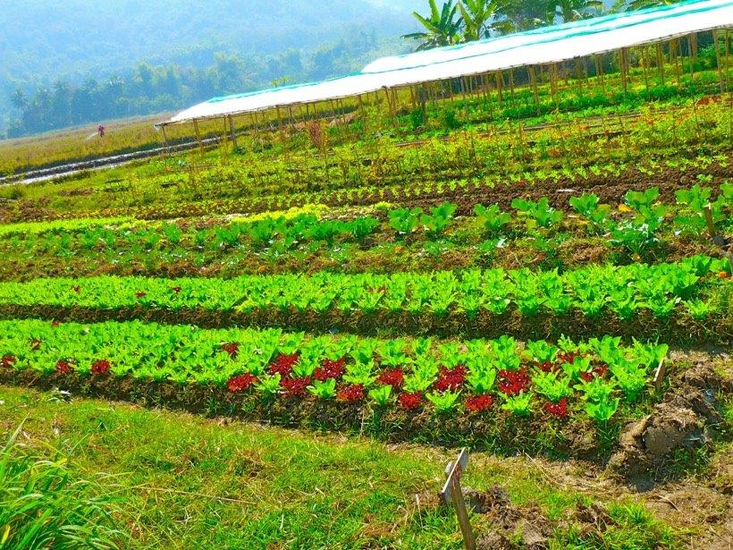
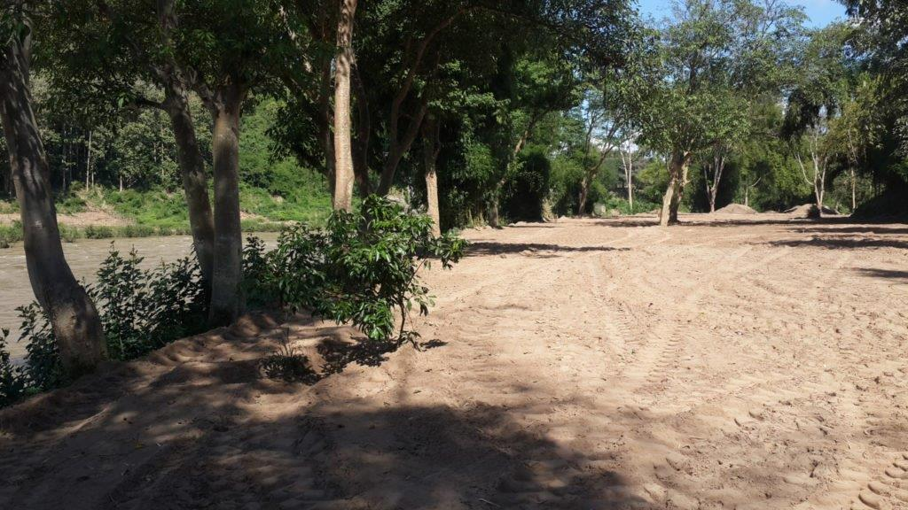

Agriculture in Laos

From 2004-2012, laos experienced a spurt of economic growth due in large part to an increase in rice production. During that time period, the country’s agricultural gross product increased by 8.7 percent.
But since 2012, the growth in agriculture has slowed. In 2013-14, agricultural gross product fell below 2 percent. Much of the past growth came from the expansion of cultivated lands, but this expansion may have reached its limits. In order for laos to continue to grow its economy and support those who rely on agriculture, sustainable agriculture in laos will become increasingly important to the country’s future.
The United States Agency for International Development (USAID) is assisting laos’s agriculture sector through the Feed the Future program. The program has trained over 193,000 farmers in new technologies. This has led to an increase in income among those in the farming industry as well as a 30 percent decrease in the number of underweight children in laos.
USAID is continuing its work in laos and has laid out its goals and expected results for the future. These expectations include continuing to help farmers increase sales and working with the private sector to grow and leverage investments in horticulture.
In September 2016, Kansas State University partnered with the USAID Feed the Future program to launch the Center of Excellence on Sustainable Agricultural Intensification and Nutrition (CE SAIN). The center seeks to increase sustainable agriculture in laos with a combination of private sector innovation, public sector improvement and training in sustainable agriculture techniques. These goals are accomplished in part by innovation labs and technology parks that highlight new technologies and strategies.
Another project funded by the partnership between USAID and CE SAIN is being run by Penn State University and focuses on the northern part of laos. This program will work directly with 250 women in the agricultural industry. It will teach the women new farming techniques as well as how to successfully deal with climate change.
Rick Bates, a horticulture professor at Penn State, said that the program’s goal is “growing more food, on existing land, using fewer resources and in an ecologically friendly manner”. This sums up why sustainable agriculture in laos is such a vital part of the country’s future. When the expansion of cultivated lands is no longer an option, new and innovative technologies can help farmers grow crops more efficiently on the land that is available.
– Aaron Childree
“Organic by default” is one of the main characteristics of Lao agriculture. This means that the farmers do not have enough means to buy chemicals to use in food production and that basically they are already producing food in sustainable manner. Lack of means for chemicals and better technology might seem as a disadvantage when in reality, that helps Lao farmers to easily get used to the principles of organic agriculture and to apply those principles in their daily work.
Organic agriculture was firstly introduced as a concept in Laos back in 1990, but the success of this introduction was modest in terms of its market value. The farmers usually sold organically produced food as conventional due to missing market linkage for organic products. Only few products were sold as pesticide free and natural.
Development of Organic Agriculture
As time went by, organic agriculture became more and more popular in the eyes of farmers, buyers, but also the government and policy makers. In the mid-2000, better market linkages were established and the revenues from producing and selling organic food increased. Farmers began to apply for certifications which confirm the organic origin of a product, realizing that a formal recognition of the food quality they produce means better access to the market.
ORGANIC AGRICULTURE AS A NATIONAL PRIORITY
As time went by, organic agriculture became more and more popular in the eyes of farmers, buyers, but also the government and policy makers. In the mid-2000, better market linkages were established and the revenues from producing and selling organic food increased. Farmers began to apply for certifications which confirm the organic origin of a product, realizing that a formal recognition of the food quality they produce means better access to the market.
Better access to the market for organically grown products
Apart from many local and foreign NGOs supporting sustainable / organic agriculture, Lao government has been a strong proponent of these practices as well. Support confirmed by putting in place “Strategic Plan for National Organic Agriculture Development 2025 and Vision Towards 2030” which shows long term devotion to supporting organic agriculture.
GOOD AGRICULTURE PRACTICE
Farmers who obeyed rules, who didn’t use pesticides and used no to fertilizers, are getting certificates of Good Practice. They were not only successful , but also established good relations with the market and customers who understand benefits. As the sector continues to grow, there will be growing aspirations which could be additional opportunity for farmers.
BENEFITS FROM GROWING SUSTAINABLY

Sustainable food production
Increased yields and better financial retribution for the farmers are not the only benefits of this practice. With the increased awareness of the importance of sustainable food production , people eat healthier now.
BENEFITS FROM GROWING SUSTAINABLY
Some of successful Lao organic farms are constantly attracting tourists because they are eager to be a Lao organic farmer as an experience moreover, trip advisor will suggest you to visit some organic farm when visiting Laos. In addition, Laos could prosper from attracting tourists interested in healthy food.
MOST POPULAR ORGANIC PRODUCTS
The first certification of organic origin in Laos granted for tea back in 2006. Nevertheless, organically produced tea is lagging behind other products such as coffee, rice and some sorts of vegetables. Also, there is the case that Laos has several products i.e. different kinds of herbs, and certified as organic.
ECOFARMING AS AN UPGRADE

Nam Khan eco farm under construction
Laos is a great starting point for our project. People having knowledge about sustainable food production , It’s easy applying principles of Eco farming and an upgrade.
Images Used:
https://www.rfa.org/english/news/laos/contamination-03052018171620.html/laos-maize-farmer-1997.jpg - Image
https://www.namkhanproject.com/wp-content/uploads/2016/11/L1230401.jpeg
https://www.namkhanproject.com/wp-content/uploads/2016/11/L1050306-1024x768.jpeg
https://www.namkhanproject.com/wp-content/uploads/2016/11/L1230403.jpeg
https://www.namkhanproject.com/wp-content/uploads/2017/02/20161117_124336-1024x576.jpg
Share to: